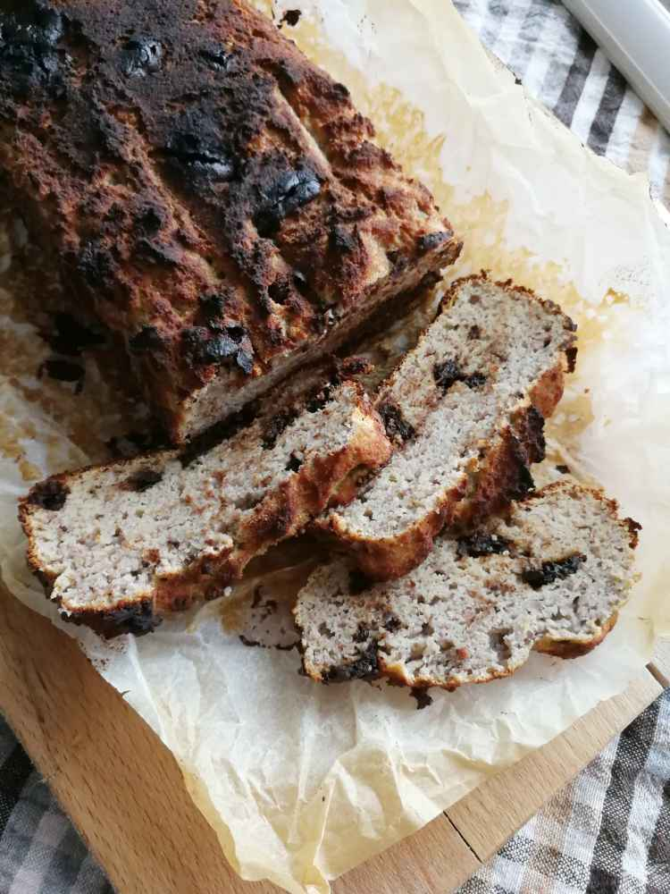

Baked Banana Chocolate Cake

Ingredients:
Instructions:
- Take the two bananas and bake them in the oven at 250°C for 15 minutes. This duration is enough for the bananas to turn black while the insides cook, maximizing the banana aroma.
- Once baked, remove the bananas from the oven, peel them, and place the soft flesh into a bowl. Mash them using a fork or a potato masher. Let it cool for about 5-10 minutes.
- After cooling, break the eggs into the banana mixture and mix thoroughly.
- Add the coconut flour and baking powder to the banana-egg mixture and stir again.
- Break the chocolate into small pieces and mix it into the batter.
- Transfer the mixture into a baking tin and bake in a preheated oven at 180°C for 30-35 minutes.
Health Benefits:
- Bananas: A good source of potassium, dietary fiber, and antioxidants. They aid in digestion, promote heart health, and provide essential vitamins and minerals.
- Eggs: Packed with high-quality proteins, essential amino acids, and various essential vitamins and minerals.
- Coconut Flour: High in fiber, protein, and healthy fats. It's also free from wheat and other grains.
- Chocolate (85% cocoa): Rich in flavonoids, which have antioxidant properties. It also contains essential minerals like iron, magnesium, and zinc.
Back to home page